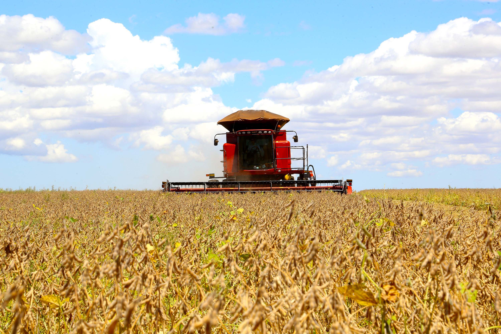
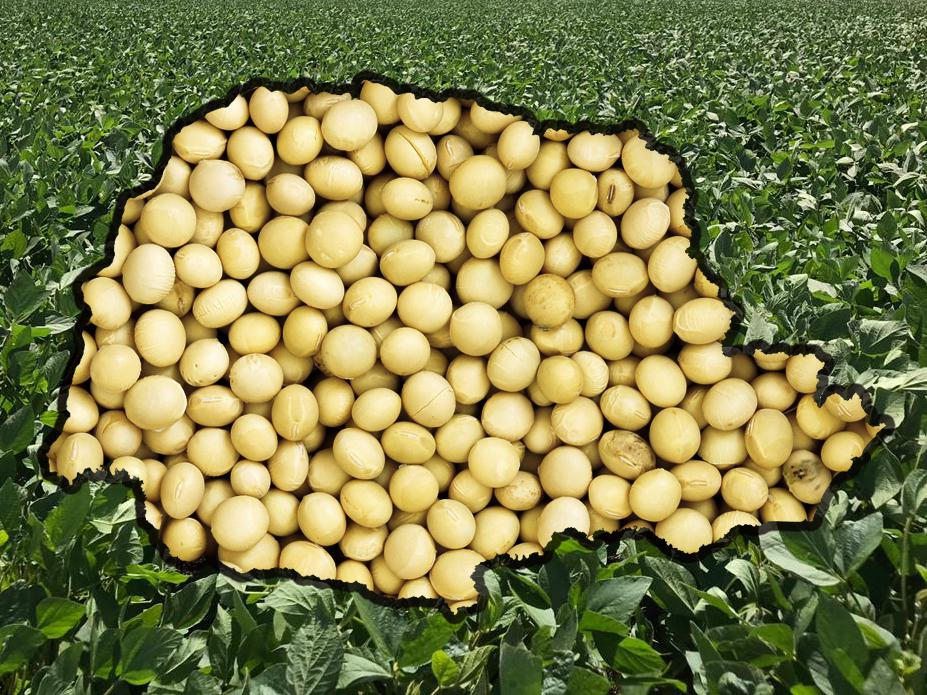

SOJA DO PARANÁ: A SEMENTE DA ECONOMIA


- A soja é uma dos commodites mais importantes produzidos no Brasil sendo o segundo maior exportados o mundo;
- O solo paranaense é fértil e se destaca como importante produtor de soja, favorecendo atividade agrícola do Estado e País;
- Dos cerca de 10 milhões de hectares em uso, 5,3 milhões são destinadas a soja e milho. Juntos os dois grãos rendem à economia paranaense mais de R$ 15 milhões por verão;
- O Brasil pode produzir 146,8 milhões de toneladas de sojas na atual safra de 2024. Desse total o Paraná será responsável por 18,8 milhõe de toneladas.